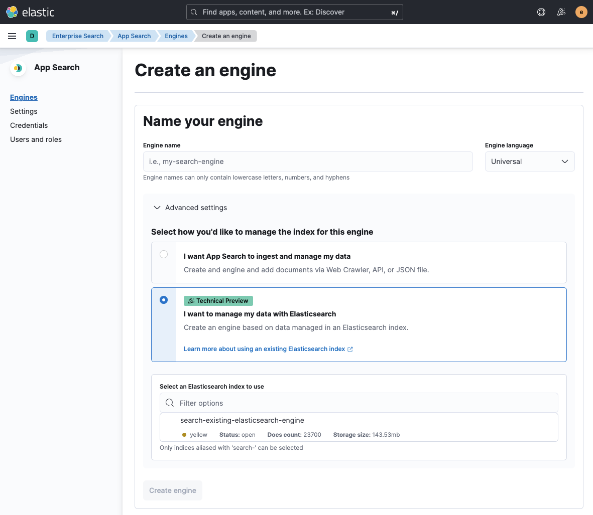

Create Elasticsearch index enginesedit
Only indices with a name or alias that start with search- are available to create engines.
Ensure that your index’s name starts with search- .
You can create an alias prefixed with search- if renaming your index is not feasible.
See create or update alias API in the Elasticsearch documentation for more details on creating aliases.
Elasticsearch index engines do not support using an Elasticsearch alias that refers to multiple indices. Use an Elasticsearch alias that refers to only one index.
You can create Elasticsearch index engines using App Search UI:
- Select "Engines", and press the "Create engine" button
- Choose an engine name, and click on "Advanced settings"
- Choose "I want to manage my data with Elasticsearch" option.
-
A list of the available Elasticsearch indices and aliases that start with
search-to use will be displayed. - Select the Elasticsearch index from the list and click "Create Engine"
